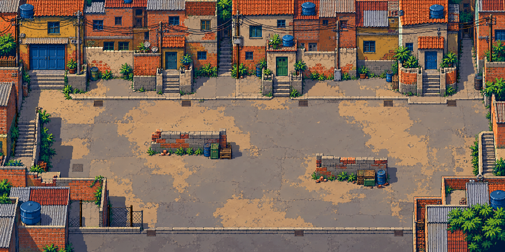
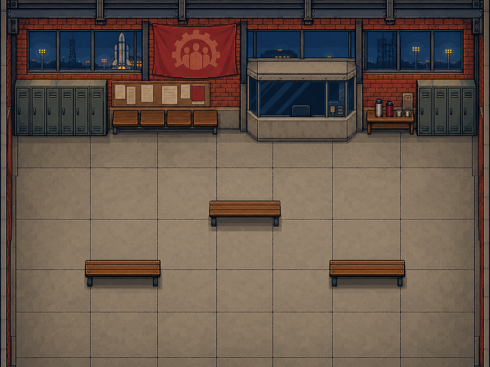

Fonte completa: fases 7 e 8


Fontes ImageGen completas, preservadas. A arquitetura, as escadarias e o guichê protegido foram definidos antes da conversão nativa.


Grade lógica de 2×pixels, paleta global antes dos recortes, módulos arquiteturais inteiros e reutilização exata de tiles com H/V. Sem substituições por tiles parecidos. Pés e tiros colidem nas duas barricadas e nos três bancos; os limites excluem construções da circulação.

Favela: 497 tiles. Cinco cargas e um depósito acessíveis, além dos três transmissores da fase seguinte.

13A: Dinorah trabalha no guichê protegido.

13B: o mesmo lugar com o memorial. Geometria idêntica, 45 inimigos em lugar de 30.
As duas variantes do sindicato compartilham um atlas de 568 tiles. As reconstruções são idênticas, pixel por pixel, às composições antes do corte.
Geometria e validação · Pipeline
Os testes de emulador precisam ser executados sobre a ROM conjunta atualizada. Os resultados antigos não validam as novas cenas.